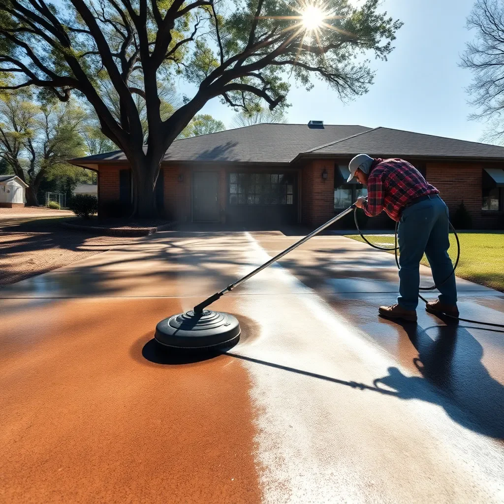

Driveway & Concrete Cleaning in Knoxville, TN
High-pressure concrete cleaning that removes oil stains, mold, mildew, rust, and ground-in dirt from driveways, sidewalks, and patios across the Knoxville area.

Knoxville's Humidity is Hard on Concrete
East Tennessee's combination of heat, humidity, and seasonal rainfall creates near-perfect conditions for mold, mildew, and algae to colonize concrete surfaces. If you've noticed your driveway turning green along the edges, dark black streaks near the garage, or a general gray-on-gray discoloration that never seems to wash off with a garden hose — you're dealing with organic growth that requires professional-grade pressure washing to remove.
Add in Tennessee's red clay soil (which stains concrete a persistent orange-brown), oil drips from vehicles, and rubber tire marks, and even a well-maintained Knoxville driveway can look neglected within a year of its last cleaning.
What We Clean
- Concrete driveways — standard and exposed aggregate
- Brick pavers — joint-sand safe cleaning at appropriate pressure
- Stamped concrete — careful pressure calibration to avoid surface damage
- Concrete walkways and sidewalks
- Patios and pool decks
- Parking pads and garage aprons
Our Driveway Cleaning Process
- Pre-treatment: Oil stains and heavily soiled areas are pre-treated with commercial degreasers and cleaning agents that penetrate the concrete pores.
- Surface cleaning: We use a rotating surface cleaner (not an open wand) for streak-free, even cleaning across the entire surface at 2,500–3,500 PSI.
- Detail edges: Edges along grass, landscaping beds, and garage doors are cleaned by wand for complete coverage.
- Post-rinse: A final rinse removes all loosened debris and cleaning residue.
- Optional sealing: Ask about concrete sealing to protect your freshly cleaned surface for years longer.
Oil Stains, Mold & Tennessee Red Clay
Three things ruin more Knoxville driveways than anything else: oil stains from vehicles, mold and mildew from humidity, and red clay from Knox County's famous soil. Our commercial degreasing pre-treatment tackles oil; our cleaning solutions attack mold at the root; and our 3,000+ PSI surface cleaner removes clay staining that has no chance against a garden hose. The before-and-after difference on a stained Knoxville driveway is consistently dramatic.
Driveway Cleaning Pricing
- Standard 2-car driveway: $120–$200
- Large or long driveway: $180–$280
- Brick paver driveway: $160–$280 (additional care required)
- Driveway + walkways combo: Best value — ask for a bundled quote
Frequently Asked Questions
Can pressure washing remove oil stains from a concrete driveway?
Yes — professional-grade hot water pressure washing combined with degreasing agents removes most oil and grease stains. Fresh stains lift more completely than old, set-in stains. We pre-treat oil spots before pressure washing for maximum results. Very old or severe stains may lighten significantly without 100% removal.
How much does driveway cleaning cost in Knoxville?
Driveway pressure washing in Knoxville typically runs $100–$250 for a standard two-car concrete driveway. Brick pavers cost slightly more. Stained or heavily soiled driveways may require additional pre-treatment. All estimates are free and firm before work begins.
Will pressure washing damage my concrete or pavers?
When done correctly, pressure washing does not damage concrete or pavers. We calibrate pressure for each surface — 2,500–3,500 PSI for concrete, 1,500–2,500 PSI for pavers. We use rotating surface cleaners rather than open wand tips for consistent results without streaks or etching.
Get Your Driveway Looking New Again
Free estimates for all Knoxville-area properties. Usually scheduled within 3–5 business days.